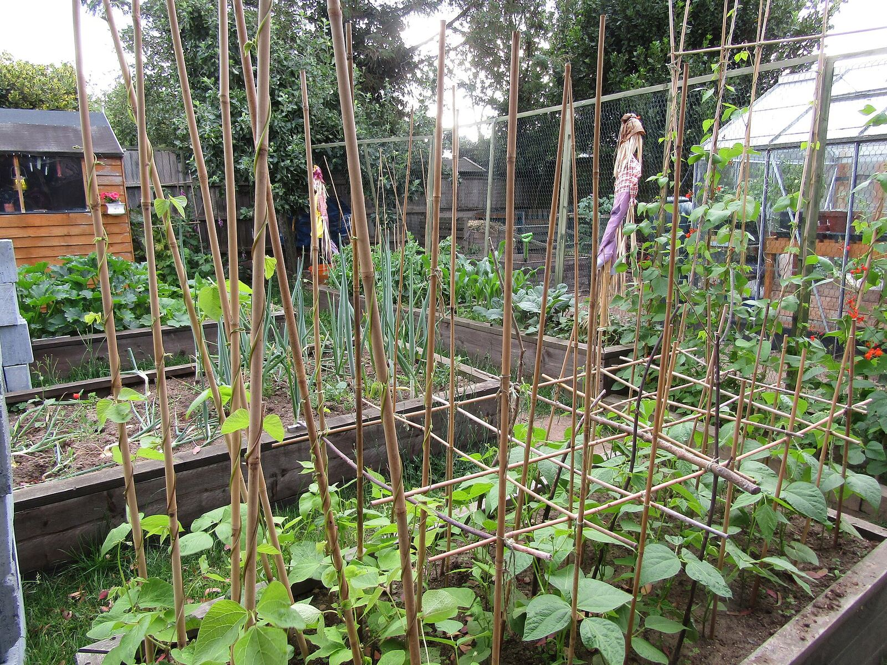
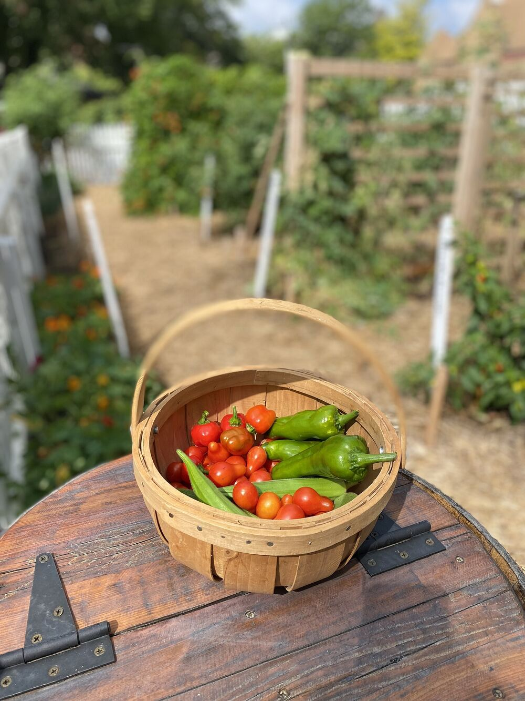

Know what to plant this week.
Frost dates for your ground, one checklist for the week, and your data never leaves your device.

Showing an example plot until you set your own.
This week on your plot
Your week will print here
Set your location above, or your own frost dates, and this fills with actions for your ground.
Your frost dates
Crop notes
Crop notes

Works without signal
-
No internet after setup
First visit fetches your frost normals and caches them; the app shell installs for offline use. Then pull the plug.
-
Your ground stays yours
Coordinates, dates and check-offs live in this browser only. No accounts, no analytics, no server of ours.
-
Costs nothing to run
Open climate data, an open-weight model running on your device, static hosting. No API keys, no usage meter.
Ask your garden
Optional. A small open-weight model runs inside this tab. Questions and answers never reach a server. Download once per model, then ask offline.
Needs a WebGPU-capable browser. The planner above never does.